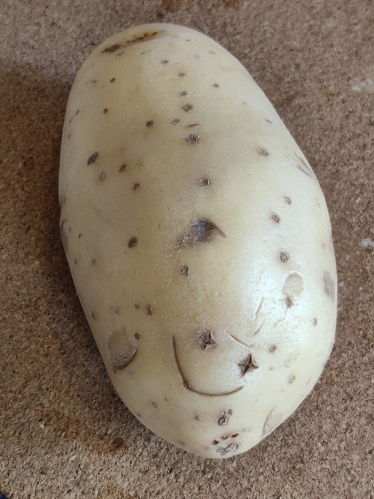
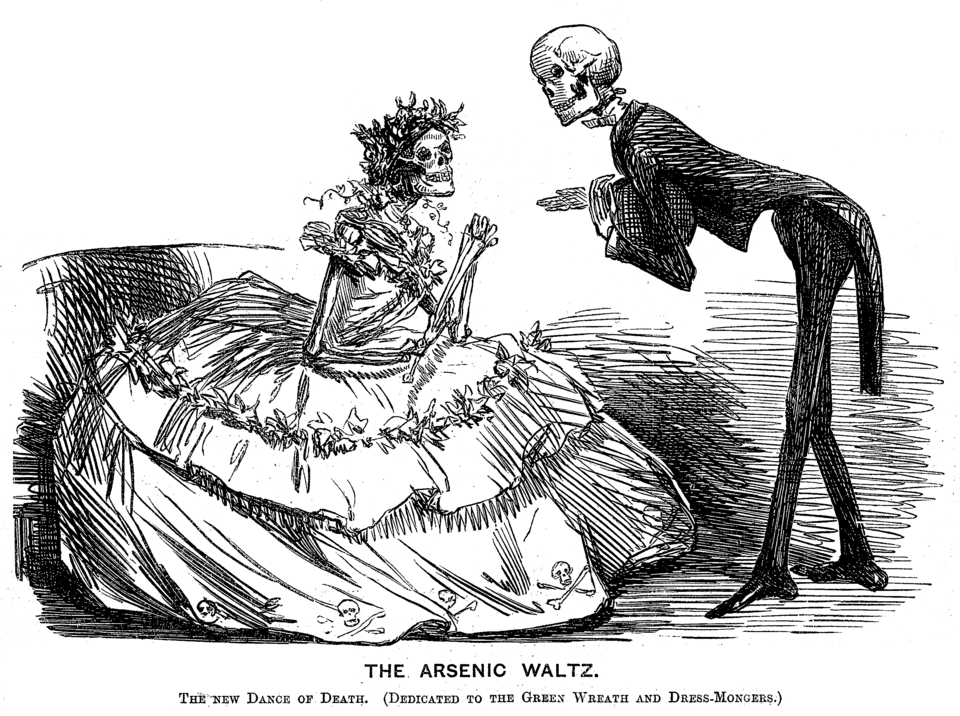
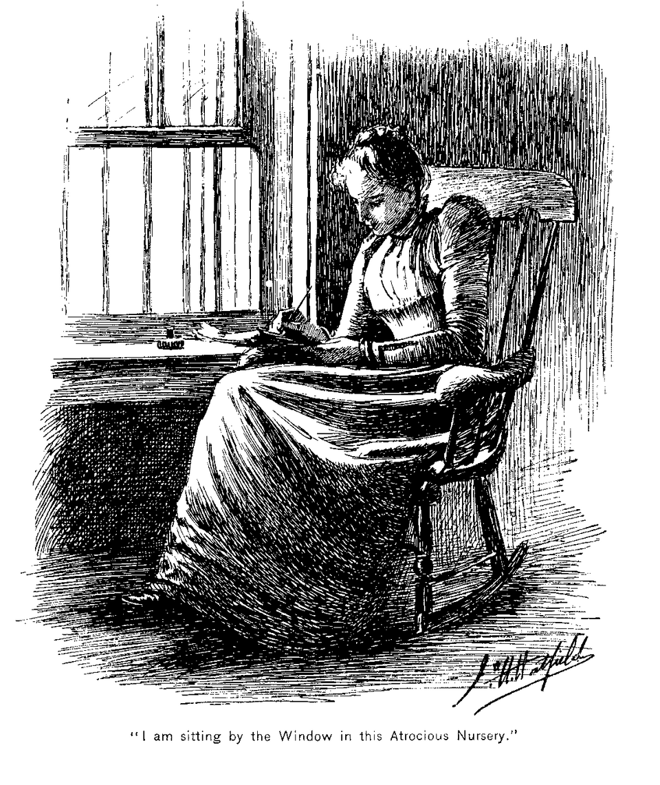

Read time25 minutes, plus 2 news links and a 30-minute weekend classic
The Little Lion Daily
小狮日报
Weekend specialThe wallpaper edition · Story on Page A3
Saturday, 28 November 2026星期六 · 十一月二十八日Price: free for curious minds
Today's news · Energy & the region
Plugging in: How electrification can help South-east Asia's energy transition
The Straits Times · Environment · 28 Nov 2026
Why read it: "Electrification" means switching things that burn fuel (cars, cooking stoves, factory machines) over to running on electricity. The piece's summary says it could also help tackle "energy poverty" in our region, meaning people who still can't count on clean, affordable power at home. As you read, look for two things: what the energy transition actually involves, and why the same idea can be a climate plan and a fairness plan at the same time.
Brain science · Case file · 7 min read + 1 challenge
Why is that power socket staring at you?
Faces on Mars, faces in toast, faces in potatoes. Your brain is a face-finding machine, and it would rather be wrong than miss one.
By the Little Lion mind desk
Look at the nearest power socket. Two little slots on top, one below. Two eyes and a mouth, looking shocked. (Sorry. It is a socket.)
Now look around your HDB flat. The washing machine has a round, surprised face. The front of a car on the road outside is grinning, or scowling, depending on the headlights. The kettle looks smug. Your schoolbag, unzipped, is yawning.
None of these things has a face. Your brain gives them one anyway. Scientists call this pareidolia (say it "pa-rye-DOH-lee-ah"), from two Greek words: para, "beside" or "instead of", and eidolon, "image". Seeing an image that isn't really there.
Let's open the case files.
File 1The Face on Mars
25 July 1976. NASA's Viking 1 orbiter is photographing a region of Mars called Cydonia, looking for a safe landing site for its partner probe. One blurry black-and-white frame shows a rocky hill about 2 km across, and on it, unmistakably, a human face: two eye sockets, a nose, a mouth, staring straight up into space.
NASA itself mentioned the funny "head" in a press release, putting it down to shadows. But the picture escaped into books, films and late-night radio. Was it a giant monument? Built by Martians? Hidden by NASA?
Later spacecraft settled it. Sharper photos taken by Mars Global Surveyor from 1998, and then by the Mars Reconnaissance Orbiter, showed an ordinary eroded hill, a mesa. The "eyes" and "mouth" were shadows from a low sun, smudged by a low-resolution camera. Better camera, no face.
The "Face on Mars", photographed in 2007 by the Mars Reconnaissance Orbiter's HiRISE camera, which can pick out objects about 90 cm across. Inset (bottom right): the famous blurry Viking 1 view.Photo: NASA / JPL / University of Arizona / Wikimedia Commons, Public domain
File 2The $28,000 sandwich
In 2004, a woman in Florida put a ten-year-old grilled cheese sandwich up for sale on eBay. Why would anyone buy a stale, decade-old sandwich? Because she, and plenty of other people, saw the face of the Virgin Mary in the toasty brown marks. An online casino bought it for US$28,000.
Toast, clouds, wood grain, the Moon: around the world, people have been finding faces in them for as long as there have been people. In Europe, it's the "Man in the Moon". Look again at a full moon here, and the same dark patches can become the Moon rabbit (玉兔) pounding medicine beside Chang'e. Same patches, different brain, different picture.
File 3The 0.17-second detective
So what's going on inside your head? On the underside of your brain, towards the back, is a patch called the fusiform face area. It fires up strongly when you look at faces, far more than for houses or cars or hands.
Brain-scanning studies suggest that this area also reacts to face-like objects, and fast: in one experiment, the brain's response to "faces" in everyday objects showed up in well under a fifth of a second, about as quickly as for real faces. You see the face first. You realise "wait, that's a socket" a moment later.
Why would evolution build such a jumpy face detector? Think about it like a guard at a gate. Mistaking a bush for a face costs you nothing: a little jump, a laugh. Mistaking a real face (a predator, an enemy, your angry mother) for a bush could cost you a lot. So the brain sets the alarm to "sensitive". A few false alarms are the price of never missing the real thing.
And it starts early. Newborn babies, only hours old, will turn their eyes and heads further to follow a simple pattern of two blobs above one blob than the same blobs arranged upside down. Nobody taught them that. They arrive ready to find faces.

Exhibit A: a perfectly ordinary potato, apparently having a lovely day. Two "eyes" and a "smile" are all your brain needs.Photo: Andy Mabbett / Wikimedia Commons, CC BY-SA 4.0
File 4The artist's trick
Some people use pareidolia on purpose. Leonardo da Vinci wrote in his notebooks that a painter looking for ideas should stare at walls stained with damp or made of mixed stones, where he would start to see landscapes, battles and strange faces. In 1921, the Swiss psychiatrist Hermann Rorschach published his famous inkblot test, which asks people what they see in symmetrical ink splodges. (Psychologists still argue about how useful it is.)
And in today's weekend story on A3, a woman locked away in a room with ugly yellow wallpaper begins to see something in the pattern: "a broken neck and two bulbous eyes". Is it pareidolia, or something worse? Read it and decide.
Weird but true
Monkeys see them too. In a 2017 study, rhesus macaques spent longer looking at face-like objects, such as a fruit or a bag that seemed to have a face, than at similar objects without one.
Imaginary faces tend to be "boys". In a 2022 study, volunteers shown faces in objects judged far more of them to look male than female, even though objects have no gender at all.
Your brain hears things too. Pareidolia isn't only visual. Hearing hidden words in a song played backwards, or your name in the hiss of a shower, is the same trick with sound.
Car designers know it. Many cars are styled so the headlights and grille look like a face. A "friendly" car and an "angry" car can be almost the same shape.
Try this · The face hunt (10 minutes)
1. Walk around your home (or the void deck, or the canteen) and photograph five objects with faces. Bonus points for a face that looks surprised, smug, or sleepy.
2. On a piece of paper, draw just two dots and a curved line under them. Turn it upside down. Is it still a face? Now turn it sideways. When does the face disappear?
3. Show your photos to a family member without saying anything. Do they see the faces too, straight away?
What's going on?
Most people spot the faces within a second, because your brain is hunting for the "two eyes above a mouth" layout. Upside-down and sideways faces are much harder to recognise. Psychologists have studied this for decades, and it suggests the brain handles faces as a whole pattern, not as a list of parts.
The Little Lion DailyPage A2Saturday, 28 November 2026
History mystery · Myth vs fact · 6 min read
The wallpaper that could kill you
The most fashionable colour of the 1800s was a gorgeous, glowing green. It was also made with arsenic.
By the Little Lion history desk
London, the 1860s. You've just moved into a smart new house. The parlour walls are covered in the latest wallpaper: ferns and leaves in a green so bright it almost glows. Your visitors are jealous.
But something is wrong. The children keep getting headaches and stomach aches. On damp days the room smells faintly of garlic. Someone in the family is always ill, and gets better on holiday, and gets ill again the moment they come home.
The culprit might be on the walls.
1775 Swedish chemist Carl Wilhelm Scheele invents a new bright green pigment made from copper and arsenic. It's cheap, vivid and easy to make. People call it Scheele's green. 1814 An even richer, longer-lasting version appears, made from copper and arsenic too. It goes by names like emerald green and Paris green. 1800s Green goes wild: wallpaper, dresses, artificial flowers, paint, children's toys, even some sweets and cake decorations.
Before these pigments, a really bright green was hard to get. Natural green dyes faded, and painters often had to mix blue and yellow. So when cheap, dazzling greens arrived, Victorian Britain fell in love. Wallpaper, newly affordable thanks to machine printing, carried the green into ordinary homes.
The problem? Arsenic is a poison. Swallowed or breathed in as dust, it can cause vomiting, stomach pain, and, over time, damage to the skin, nerves and organs.
"The dose makes the poison."A little arsenic on a wall is not the same as a mouthful. But flaking, dusty, damp walls added up.
The victims. The people most at risk weren't the ones living with the wallpaper. They were the workers who made the green things. In 1861, a 19-year-old London artificial-flower maker named Matilda Scheurer died after months of dusting fake leaves with green arsenic powder. Her death made the newspapers, and so did the danger.
The next year, the magazine cartoonists joined in. Look at the picture below: two skeletons in their best clothes, waltzing. She wears a fashionable dress and a wreath of leaves. The title? The Arsenic Waltz.

"The Arsenic Waltz: The new Dance of Death. (Dedicated to the Green Wreath and Dress-Mongers.)" A satirical etching from 1862 that blamed the fashion for arsenic greens.Image: Wellcome Collection / Wikimedia Commons, CC BY 4.0
The garlic clue. In the 1890s, an Italian doctor, Bartolomeo Gosio, found that certain moulds growing on arsenic-containing material could turn it into a gas that smelled of garlic. People nicknamed it "Gosio gas". Decades later, chemists worked out what it was. Damp houses plus mould plus green wallpaper suddenly sounded like a recipe for poisoned air. (Modern scientists think the gas itself was probably less dangerous than people feared, and that dust and flakes from the paper were the likelier problem. The mystery isn't completely closed.)
The designer in denial. The most famous wallpaper designer of the age, William Morris, had an awkward secret: much of his family's money came from a mine in Devon that became one of the world's biggest producers of arsenic. In a letter in the 1880s, Morris scoffed at the arsenic scare, comparing the doctors to people caught up in a witch hunt. His own firm eventually moved to arsenic-free colours anyway.
How it ended. No single law swept the poison off Britain's walls. Instead, fear did the job. Newspapers, doctors and cartoons kept up the pressure, and by the late 1800s manufacturers were proudly advertising their papers as "free from arsenic". Bad news travels fast. So does a bad reputation.
Myth or fact? You be the judge
"Napoleon was killed by his green wallpaper." Verdict
Probably a myth. Napoleon died in exile on St Helena in 1821. In 1980, a scrap of wallpaper said to be from his house there was found to contain an arsenic green pigment, and the theory went viral. Most historians and doctors still think stomach cancer killed him. The wallpaper might have made his damp house unhealthier, but it's not the main suspect.
"Arsenic greens were only used on wallpaper." Verdict
Myth. They turned up in dresses, gloves, artificial flowers, paints, toys and even some food colouring.
"Bright green is still a tricky colour to make safely." Verdict
Fact, in a way. Many pigments, old and new, need careful handling. That's why modern paints and toys have safety rules and labels. A cheaper, brighter colour isn't automatically a safer one.
Try this · Spot the warning labels (5 minutes)
Go on a label hunt at home: cleaning sprays, bleach, insect spray, art supplies. Find three products with a hazard warning. For each one, write down what the danger is (swallowing? breathing it in? skin contact?) and what the label tells you to do. Then ask: who would have warned a Victorian family about their wallpaper?
Just read; don't open or sniff anything. The point is to notice how much safety information we now take for granted.
The Little Lion DailyPage A3 · Weekend classicSaturday, 28 November 2026
Daily story · weekend classic · about 30 minutes
The Yellow Wallpaper
By Charlotte Perkins Gilman · first published 1892
Before you read. Charlotte Perkins Gilman (1860–1935) was an American writer, lecturer and campaigner for women's rights. This story appeared in The New England Magazine in January 1892. It grew out of her own life: after her daughter was born she fell into a deep depression, and a famous doctor prescribed a "rest cure" of lying still and doing as little thinking, reading and writing as possible. She later said the treatment nearly drove her mad, and that she wrote this story to show what it could do. (The narrator even mentions that same doctor, Weir Mitchell, by name.)
The story is told as a secret diary, and the narrator is not always reliable: she sees some things very clearly and others not at all. Watch how her descriptions of the wallpaper change, and how kind, sensible John's "care" works out. It's a famous psychological horror story: eerie and disturbing, not gory. If it gets heavy, take a break and come back.
It is very seldom that mere ordinary people like John and myself secure ancestral halls for the summer.
A colonial mansion, a hereditary estate, I would say a haunted house, and reach the height of romantic felicity—but that would be asking too much of fate!
Still I will proudly declare that there is something queer about it.
Else, why should it be let so cheaply? And why have stood so long untenanted?
John laughs at me, of course, but one expects that in marriage.
John is practical in the extreme. He has no patience with faith, an intense horror of superstition, and he scoffs openly at any talk of things not to be felt and seen and put down in figures.
John is a physician, and perhaps—(I would not say it to a living soul, of course, but this is dead paper and a great relief to my mind)—perhaps that is one reason I do not get well faster.
You see, he does not believe I am sick!
And what can one do?
If a physician of high standing, and one’s own husband, assures friends and relatives that there is really nothing the matter with one but temporary nervous depression—a slight hysterical tendency—what is one to do?
My brother is also a physician, and also of high standing, and he says the same thing.
So I take phosphates or phosphites—whichever it is, and tonics, and journeys, and air, and exercise, and am absolutely forbidden to “work” until I am well again.
Personally, I disagree with their ideas.
Personally, I believe that congenial work, with excitement and change, would do me good.
But what is one to do?
I did write for a while in spite of them; but it does exhaust me a good deal—having to be so sly about it, or else meet with heavy opposition.
I sometimes fancy that in my condition if I had less opposition and more society and stimulus—but John says the very worst thing I can do is to think about my condition, and I confess it always makes me feel bad.
So I will let it alone and talk about the house.
The most beautiful place! It is quite alone, standing well back from the road, quite three miles from the village. It makes me think of English places that you read about, for there are hedges and walls and gates that lock, and lots of separate little houses for the gardeners and people.
There is a delicious garden! I never saw such a garden—large and shady, full of box-bordered paths, and lined with long grape-covered arbors with seats under them.
There were greenhouses, too, but they are all broken now.
There was some legal trouble, I believe, something about the heirs and co-heirs; anyhow, the place has been empty for years.
That spoils my ghostliness, I am afraid; but I don’t care—there is something strange about the house—I can feel it.
I even said so to John one moonlight evening, but he said what I felt was a draught, and shut the window.
I get unreasonably angry with John sometimes. I’m sure I never used to be so sensitive. I think it is due to this nervous condition.
But John says if I feel so I shall neglect proper self-control; so I take pains to control myself,—before him, at least,—and that makes me very tired.
I don’t like our room a bit. I wanted one downstairs that opened on the piazza and had roses all over the window, and such pretty old-fashioned chintz hangings! but John would not hear of it.
He said there was only one window and not room for two beds, and no near room for him if he took another.
He is very careful and loving, and hardly lets me stir without special direction.
I have a schedule prescription for each hour in the day; he takes all care from me, and so I feel basely ungrateful not to value it more.
He said we came here solely on my account, that I was to have perfect rest and all the air I could get. “Your exercise depends on your strength, my dear,” said he, “and your food somewhat on your appetite; but air you can absorb all the time.” So we took the nursery, at the top of the house.
It is a big, airy room, the whole floor nearly, with windows that look all ways, and air and sunshine galore. It was nursery first and then playground and gymnasium, I should judge; for the windows are barred for little children, and there are rings and things in the walls.
The paint and paper look as if a boys’ school had used it. It is stripped off—the paper—in great patches all around the head of my bed, about as far as I can reach, and in a great place on the other side of the room low down. I never saw a worse paper in my life.
One of those sprawling flamboyant patterns committing every artistic sin.
It is dull enough to confuse the eye in following, pronounced enough to constantly irritate, and provoke study, and when you follow the lame, uncertain curves for a little distance they suddenly commit suicide—plunge off at outrageous angles, destroy themselves in unheard-of contradictions.
The color is repellant, almost revolting; a smouldering, unclean yellow, strangely faded by the slow-turning sunlight.
It is a dull yet lurid orange in some places, a sickly sulphur tint in others.
No wonder the children hated it! I should hate it myself if I had to live in this room long.
There comes John, and I must put this away,—he hates to have me write a word.
We have been here two weeks, and I haven’t felt like writing before, since that first day.
I am sitting by the window now, up in this atrocious nursery, and there is nothing to hinder my writing as much as I please, save lack of strength.
John is away all day, and even some nights when his cases are serious.
I am glad my case is not serious!
But these nervous troubles are dreadfully depressing.
John does not know how much I really suffer. He knows there is no reason to suffer, and that satisfies him.
Of course it is only nervousness. It does weigh on me so not to do my duty in any way!
I meant to be such a help to John, such a real rest and comfort, and here I am a comparative burden already!
Nobody would believe what an effort it is to do what little I am able—to dress and entertain, and order things.
It is fortunate Mary is so good with the baby. Such a dear baby!
And yet I cannot be with him, it makes me so nervous.
I suppose John never was nervous in his life. He laughs at me so about this wallpaper!
At first he meant to repaper the room, but afterwards he said that I was letting it get the better of me, and that nothing was worse for a nervous patient than to give way to such fancies.
He said that after the wallpaper was changed it would be the heavy bedstead, and then the barred windows, and then that gate at the head of the stairs, and so on.
“You know the place is doing you good,” he said, “and really, dear, I don’t care to renovate the house just for a three months’ rental.”
“Then do let us go downstairs,” I said, “there are such pretty rooms there.”
Then he took me in his arms and called me a blessed little goose, and said he would go down cellar if I wished, and have it whitewashed into the bargain.
But he is right enough about the beds and windows and things.
It is as airy and comfortable a room as any one need wish, and, of course, I would not be so silly as to make him uncomfortable just for a whim.
I’m really getting quite fond of the big room, all but that horrid paper.
Out of one window I can see the garden, those mysterious deep-shaded arbors, the riotous old-fashioned flowers, and bushes and gnarly trees.
Out of another I get a lovely view of the bay and a little private wharf belonging to the estate. There is a beautiful shaded lane that runs down there from the house. I always fancy I see people walking in these numerous paths and arbors, but John has cautioned me not to give way to fancy in the least. He says that with my imaginative power and habit of story-making a nervous weakness like mine is sure to lead to all manner of excited fancies, and that I ought to use my will and good sense to check the tendency. So I try.
I think sometimes that if I were only well enough to write a little it would relieve the press of ideas and rest me.
But I find I get pretty tired when I try.
It is so discouraging not to have any advice and companionship about my work. When I get really well John says we will ask Cousin Henry and Julia down for a long visit; but he says he would as soon put fire-works in my pillow-case as to let me have those stimulating people about now.
I wish I could get well faster.
But I must not think about that. This paper looks to me as if it knew what a vicious influence it had!
There is a recurrent spot where the pattern lolls like a broken neck and two bulbous eyes stare at you upside-down.
I get positively angry with the impertinence of it and the everlastingness. Up and down and sideways they crawl, and those absurd, unblinking eyes are everywhere. There is one place where two breadths didn’t match, and the eyes go all up and down the line, one a little higher than the other.
I never saw so much expression in an inanimate thing before, and we all know how much expression they have! I used to lie awake as a child and get more entertainment and terror out of blank walls and plain furniture than most children could find in a toy-store.
I remember what a kindly wink the knobs of our big old bureau used to have, and there was one chair that always seemed like a strong friend.
I used to feel that if any of the other things looked too fierce I could always hop into that chair and be safe.
The furniture in this room is no worse than inharmonious, however, for we had to bring it all from downstairs. I suppose when this was used as a playroom they had to take the nursery things out, and no wonder! I never saw such ravages as the children have made here.
The wallpaper, as I said before, is torn off in spots, and it sticketh closer than a brother—they must have had perseverance as well as hatred.
Then the floor is scratched and gouged and splintered, the plaster itself is dug out here and there, and this great heavy bed, which is all we found in the room, looks as if it had been through the wars.
But I don’t mind it a bit—only the paper.
There comes John’s sister. Such a dear girl as she is, and so careful of me! I must not let her find me writing.
She is a perfect, and enthusiastic housekeeper, and hopes for no better profession. I verily believe she thinks it is the writing which made me sick!
But I can write when she is out, and see her a long way off from these windows.
There is one that commands the road, a lovely, shaded, winding road, and one that just looks off over the country. A lovely country, too, full of great elms and velvet meadows.
This wallpaper has a kind of sub-pattern in a different shade, a particularly irritating one, for you can only see it in certain lights, and not clearly then.
But in the places where it isn’t faded, and where the sun is just so, I can see a strange, provoking, formless sort of figure, that seems to sulk about behind that silly and conspicuous front design.
There’s sister on the stairs!
Well, the Fourth of July is over! The people are gone and I am tired out. John thought it might do me good to see a little company, so we just had mother and Nellie and the children down for a week.
Of course I didn’t do a thing. Jennie sees to everything now.
But it tired me all the same.
John says if I don’t pick up faster he shall send me to Weir Mitchell in the fall.
But I don’t want to go there at all. I had a friend who was in his hands once, and she says he is just like John and my brother, only more so!
Besides, it is such an undertaking to go so far.
I don’t feel as if it was worth while to turn my hand over for anything, and I’m getting dreadfully fretful and querulous.
I cry at nothing, and cry most of the time.
Of course I don’t when John is here, or anybody else, but when I am alone.
And I am alone a good deal just now. John is kept in town very often by serious cases, and Jennie is good and lets me alone when I want her to.
So I walk a little in the garden or down that lovely lane, sit on the porch under the roses, and lie down up here a good deal.
I’m getting really fond of the room in spite of the wallpaper. Perhaps because of the wallpaper.
It dwells in my mind so!
I lie here on this great immovable bed—it is nailed down, I believe—and follow that pattern about by the hour. It is as good as gymnastics, I assure you. I start, we’ll say, at the bottom, down in the corner over there where it has not been touched, and I determine for the thousandth time that I will follow that pointless pattern to some sort of a conclusion.
I know a little of the principle of design, and I know this thing was not arranged on any laws of radiation, or alternation, or repetition, or symmetry, or anything else that I ever heard of.
It is repeated, of course, by the breadths, but not otherwise.
Looked at in one way each breadth stands alone, the bloated curves and flourishes—a kind of “debased Romanesque” with delirium tremens—go waddling up and down in isolated columns of fatuity.
But, on the other hand, they connect diagonally, and the sprawling outlines run off in great slanting waves of optic horror, like a lot of wallowing seaweeds in full chase.
The whole thing goes horizontally, too, at least it seems so, and I exhaust myself in trying to distinguish the order of its going in that direction.
They have used a horizontal breadth for a frieze, and that adds wonderfully to the confusion.
There is one end of the room where it is almost intact, and there, when the cross-lights fade and the low sun shines directly upon it, I can almost fancy radiation after all,—the interminable grotesques seem to form around a common centre and rush off in headlong plunges of equal distraction.
It makes me tired to follow it. I will take a nap, I guess.
I don’t know why I should write this.
I don’t want to.
I don’t feel able.
And I know John would think it absurd. But I must say what I feel and think in some way—it is such a relief!
But the effort is getting to be greater than the relief.
Half the time now I am awfully lazy, and lie down ever so much.
John says I mustn’t lose my strength, and has me take cod-liver oil and lots of tonics and things, to say nothing of ale and wine and rare meat.
Dear John! He loves me very dearly, and hates to have me sick. I tried to have a real earnest reasonable talk with him the other day, and tell him how I wish he would let me go and make a visit to Cousin Henry and Julia.
But he said I wasn’t able to go, nor able to stand it after I got there; and I did not make out a very good case for myself, for I was crying before I had finished.
It is getting to be a great effort for me to think straight. Just this nervous weakness, I suppose.
And dear John gathered me up in his arms, and just carried me upstairs and laid me on the bed, and sat by me and read to me till it tired my head.
He said I was his darling and his comfort and all he had, and that I must take care of myself for his sake, and keep well.
He says no one but myself can help me out of it, that I must use my will and self-control and not let any silly fancies run away with me.
There’s one comfort, the baby is well and happy, and does not have to occupy this nursery with the horrid wallpaper.
If we had not used it that blessed child would have! What a fortunate escape! Why, I wouldn’t have a child of mine, an impressionable little thing, live in such a room for worlds.
I never thought of it before, but it is lucky that John kept me here after all. I can stand it so much easier than a baby, you see.
Of course I never mention it to them any more,—I am too wise,—but I keep watch of it all the same.
There are things in that paper that nobody knows but me, or ever will.
Behind that outside pattern the dim shapes get clearer every day.
It is always the same shape, only very numerous.
And it is like a woman stooping down and creeping about behind that pattern. I don’t like it a bit. I wonder—I begin to think—I wish John would take me away from here!
It is so hard to talk with John about my case, because he is so wise, and because he loves me so.
But I tried it last night.
It was moonlight. The moon shines in all around, just as the sun does.
I hate to see it sometimes, it creeps so slowly, and always comes in by one window or another.
John was asleep and I hated to waken him, so I kept still and watched the moonlight on that undulating wallpaper till I felt creepy.
The faint figure behind seemed to shake the pattern, just as if she wanted to get out.
I got up softly and went to feel and see if the paper did move, and when I came back John was awake.
“What is it, little girl?” he said. “Don’t go walking about like that—you’ll get cold.”
I thought it was a good time to talk, so I told him that I really was not gaining here, and that I wished he would take me away.
“Why darling!” said he, “our lease will be up in three weeks, and I can’t see how to leave before.
“The repairs are not done at home, and I cannot possibly leave town just now. Of course if you were in any danger I could and would, but you really are better, dear, whether you can see it or not. I am a doctor, dear, and I know. You are gaining flesh and color, your appetite is better. I feel really much easier about you.”
“I don’t weigh a bit more,” said I, “nor as much; and my appetite may be better in the evening, when you are here, but it is worse in the morning when you are away.”
“Bless her little heart!” said he with a big hug; “she shall be as sick as she pleases! But now let’s improve the shining hours by going to sleep, and talk about it in the morning!”
“And you won’t go away?” I asked gloomily.
“Why, how can I, dear? It is only three weeks more and then we will take a nice little trip of a few days while Jennie is getting the house ready. Really, dear, you are better!”
“Better in body perhaps”—I began, and stopped short, for he sat up straight and looked at me with such a stern, reproachful look that I could not say another word.
“My darling,” said he, “I beg of you, for my sake and for our child’s sake, as well as for your own, that you will never for one instant let that idea enter your mind! There is nothing so dangerous, so fascinating, to a temperament like yours. It is a false and foolish fancy. Can you not trust me as a physician when I tell you so?”
So of course I said no more on that score, and we went to sleep before long. He thought I was asleep first, but I wasn’t,—I lay there for hours trying to decide whether that front pattern and the back pattern really did move together or separately.
On a pattern like this, by daylight, there is a lack of sequence, a defiance of law, that is a constant irritant to a normal mind.
The color is hideous enough, and unreliable enough, and infuriating enough, but the pattern is torturing.
You think you have mastered it, but just as you get well under way in following, it turns a back somersault and there you are. It slaps you in the face, knocks you down, and tramples upon you. It is like a bad dream.
The outside pattern is a florid arabesque, reminding one of a fungus. If you can imagine a toadstool in joints, an interminable string of toadstools, budding and sprouting in endless convolutions,—why, that is something like it.
That is, sometimes!
There is one marked peculiarity about this paper, a thing nobody seems to notice but myself, and that is that it changes as the light changes.
When the sun shoots in through the east window—I always watch for that first long, straight ray—it changes so quickly that I never can quite believe it.
That is why I watch it always.
By moonlight—the moon shines in all night when there is a moon—I wouldn’t know it was the same paper.
At night in any kind of light, in twilight, candlelight, lamplight, and worst of all by moonlight, it becomes bars! The outside pattern I mean, and the woman behind it is as plain as can be.
I didn’t realize for a long time what the thing was that showed behind,—that dim sub-pattern,—but now I am quite sure it is a woman.
By daylight she is subdued, quiet. I fancy it is the pattern that keeps her so still. It is so puzzling. It keeps me quiet by the hour.
I lie down ever so much now. John says it is good for me, and to sleep all I can.
Indeed, he started the habit by making me lie down for an hour after each meal.
It is a very bad habit, I am convinced, for, you see, I don’t sleep.
And that cultivates deceit, for I don’t tell them I’m awake,—oh, no!
The fact is, I am getting a little afraid of John.
He seems very queer sometimes, and even Jennie has an inexplicable look.
It strikes me occasionally, just as a scientific hypothesis, that perhaps it is the paper!
I have watched John when he did not know I was looking, and come into the room suddenly on the most innocent excuses, and I’ve caught him several times looking at the paper! And Jennie too. I caught Jennie with her hand on it once.
She didn’t know I was in the room, and when I asked her in a quiet, a very quiet voice, with the most restrained manner possible, what she was doing with the paper she turned around as if she had been caught stealing, and looked quite angry—asked me why I should frighten her so!
Then she said that the paper stained everything it touched, that she had found yellow smooches on all my clothes and John’s, and she wished we would be more careful!
Did not that sound innocent? But I know she was studying that pattern, and I am determined that nobody shall find it out but myself!
Life is very much more exciting now than it used to be. You see I have something more to expect, to look forward to, to watch. I really do eat better, and am more quiet than I was.
John is so pleased to see me improve! He laughed a little the other day, and said I seemed to be flourishing in spite of my wallpaper.
I turned it off with a laugh. I had no intention of telling him it was because of the wallpaper—he would make fun of me. He might even want to take me away.
I don’t want to leave now until I have found it out. There is a week more, and I think that will be enough.
I’m feeling ever so much better! I don’t sleep much at night, for it is so interesting to watch developments; but I sleep a good deal in the daytime.
In the daytime it is tiresome and perplexing.
There are always new shoots on the fungus, and new shades of yellow all over it. I cannot keep count of them, though I have tried conscientiously.
It is the strangest yellow, that wallpaper! It makes me think of all the yellow things I ever saw—not beautiful ones like buttercups, but old foul, bad yellow things.
But there is something else about that paper—the smell! I noticed it the moment we came into the room, but with so much air and sun it was not bad. Now we have had a week of fog and rain, and whether the windows are open or not, the smell is here.
It creeps all over the house.
I find it hovering in the dining-room, skulking in the parlor, hiding in the hall, lying in wait for me on the stairs.
It gets into my hair.
Even when I go to ride, if I turn my head suddenly and surprise it—there is that smell!
Such a peculiar odor, too! I have spent hours in trying to analyze it, to find what it smelled like.
It is not bad—at first, and very gentle, but quite the subtlest, most enduring odor I ever met.
In this damp weather it is awful. I wake up in the night and find it hanging over me.
It used to disturb me at first. I thought seriously of burning the house—to reach the smell.
But now I am used to it. The only thing I can think of that it is like is the color of the paper! A yellow smell.
There is a very funny mark on this wall, low down, near the mopboard. A streak that runs round the room. It goes behind every piece of furniture, except the bed, a long, straight, even smooch, as if it had been rubbed over and over.
I wonder how it was done and who did it, and what they did it for. Round and round and round—round and round and round—it makes me dizzy!
I really have discovered something at last.
Through watching so much at night, when it changes so, I have finally found out.
The front pattern does move—and no wonder! The woman behind shakes it!
Sometimes I think there are a great many women behind, and sometimes only one, and she crawls around fast, and her crawling shakes it all over.
Then in the very bright spots she keeps still, and in the very shady spots she just takes hold of the bars and shakes them hard.
And she is all the time trying to climb through. But nobody could climb through that pattern—it strangles so; I think that is why it has so many heads.
They get through, and then the pattern strangles them off and turns them upside-down, and makes their eyes white!
If those heads were covered or taken off it would not be half so bad.
I think that woman gets out in the daytime!
And I’ll tell you why—privately—I’ve seen her!
I can see her out of every one of my windows!
It is the same woman, I know, for she is always creeping, and most women do not creep by daylight.
I see her on that long shaded lane, creeping up and down. I see her in those dark grape arbors, creeping all around the garden.
I see her on that long road under the trees, creeping along, and when a carriage comes she hides under the blackberry vines.
I don’t blame her a bit. It must be very humiliating to be caught creeping by daylight!
I always lock the door when I creep by daylight. I can’t do it at night, for I know John would suspect something at once.
And John is so queer now, that I don’t want to irritate him. I wish he would take another room! Besides, I don’t want anybody to get that woman out at night but myself.
I often wonder if I could see her out of all the windows at once.
But, turn as fast as I can, I can only see out of one at one time.
And though I always see her she may be able to creep faster than I can turn!
I have watched her sometimes away off in the open country, creeping as fast as a cloud shadow in a high wind.
If only that top pattern could be gotten off from the under one! I mean to try it, little by little.
I have found out another funny thing, but I shan’t tell it this time! It does not do to trust people too much.
There are only two more days to get this paper off, and I believe John is beginning to notice. I don’t like the look in his eyes.
And I heard him ask Jennie a lot of professional questions about me. She had a very good report to give.
She said I slept a good deal in the daytime.
John knows I don’t sleep very well at night, for all I’m so quiet!
He asked me all sorts of questions, too, and pretended to be very loving and kind.
As if I couldn’t see through him!
Still, I don’t wonder he acts so, sleeping under this paper for three months.
It only interests me, but I feel sure John and Jennie are secretly affected by it.
Hurrah! This is the last day, but it is enough. John is to stay in town over night, and won’t be out until this evening.
Jennie wanted to sleep with me—the sly thing! but I told her I should undoubtedly rest better for a night all alone.
That was clever, for really I wasn’t alone a bit! As soon as it was moonlight, and that poor thing began to crawl and shake the pattern, I got up and ran to help her.
I pulled and she shook, I shook and she pulled, and before morning we had peeled off yards of that paper.
A strip about as high as my head and half around the room.
And then when the sun came and that awful pattern began to laugh at me I declared I would finish it to-day!
We go away to-morrow, and they are moving all my furniture down again to leave things as they were before.
Jennie looked at the wall in amazement, but I told her merrily that I did it out of pure spite at the vicious thing.
She laughed and said she wouldn’t mind doing it herself, but I must not get tired.
How she betrayed herself that time!
But I am here, and no person touches this paper but me—not alive!
She tried to get me out of the room—it was too patent! But I said it was so quiet and empty and clean now that I believed I would lie down again and sleep all I could; and not to wake me even for dinner—I would call when I woke.
So now she is gone, and the servants are gone, and the things are gone, and there is nothing left but that great bedstead nailed down, with the canvas mattress we found on it.
We shall sleep downstairs to-night, and take the boat home to-morrow.
I quite enjoy the room, now it is bare again.
How those children did tear about here!
This bedstead is fairly gnawed!
But I must get to work.
I have locked the door and thrown the key down into the front path.
I don’t want to go out, and I don’t want to have anybody come in, till John comes.
I want to astonish him.
I’ve got a rope up here that even Jennie did not find. If that woman does get out, and tries to get away, I can tie her!
But I forgot I could not reach far without anything to stand on!
This bed will not move!
I tried to lift and push it until I was lame, and then I got so angry I bit off a little piece at one corner—but it hurt my teeth.
Then I peeled off all the paper I could reach standing on the floor. It sticks horribly and the pattern just enjoys it! All those strangled heads and bulbous eyes and waddling fungus growths just shriek with derision!
I am getting angry enough to do something desperate. To jump out of the window would be admirable exercise, but the bars are too strong even to try.
Besides I wouldn’t do it. Of course not. I know well enough that a step like that is improper and might be misconstrued.
I don’t like to look out of the windows even—there are so many of those creeping women, and they creep so fast.
I wonder if they all come out of that wallpaper as I did?
But I am securely fastened now by my well-hidden rope—you don’t get me out in the road there!
I suppose I shall have to get back behind the pattern when it comes night, and that is hard!
It is so pleasant to be out in this great room and creep around as I please!
I don’t want to go outside. I won’t, even if Jennie asks me to.
For outside you have to creep on the ground, and everything is green instead of yellow.
But here I can creep smoothly on the floor, and my shoulder just fits in that long smooch around the wall, so I cannot lose my way.
Why, there’s John at the door!
It is no use, young man, you can’t open it!
How he does call and pound!
Now he’s crying for an axe.
It would be a shame to break down that beautiful door!
“John dear!” said I in the gentlest voice, “the key is down by the front steps, under a plantain leaf!”
That silenced him for a few moments.
Then he said—very quietly indeed, “Open the door, my darling!”
“I can’t,” said I. “The key is down by the front door under a plantain leaf!”
And then I said it again, several times, very gently and slowly, and said it so often that he had to go and see, and he got it, of course, and came in. He stopped short by the door.
“What is the matter?” he cried. “For God’s sake, what are you doing!”
I kept on creeping just the same, but I looked at him over my shoulder.
“I’ve got out at last,” said I, “in spite of you and Jane! And I’ve pulled off most of the paper, so you can’t put me back!”
Now why should that man have fainted? But he did, and right across my path by the wall, so that I had to creep over him every time!
— THE END —

One of Joseph Henry Hatfield's illustrations for the story's first appearance in The New England Magazine, 1892.Illustration: Joseph Henry Hatfield / Wikimedia Commons, Public domain
Glossary
hereditary estate
a big property passed down through a family
phosphates
mineral salts, given as "tonics" by doctors of the time
congenial
pleasant and friendly; suited to you
lurid
unpleasantly bright and glaring in colour
impertinence
rudeness; behaving without proper respect
arabesque
a decorative pattern of curling, interwoven lines
delirium tremens
shaking and hallucinations, here used as a joke about a "drunken" pattern
derision
mocking scorn
Talk about it
John is a doctor and clearly believes he's helping. Find two moments where his "care" makes things worse. Is he a villain, or something more complicated?
Trace the wallpaper: how does the narrator describe it near the start, in the middle, and at the end? What do you think the woman "behind" the pattern stands for?
Gilman wrote this to change how doctors treated women like her. Can a story change minds more than a medical article? Think of a modern story, film or game that has done the same.
The Little Lion DailyPage A4 · Weekend fun & gamesSaturday, 28 November 2026
Saturday surprise · Colour quiz
Ten questions in full colour
Answer out loud, then peek. Tick the ones you got right.
Shine red, green and blue light onto the same white wall, all equally bright. What colour do you see where they overlap?
Show answerWhite. Light colours add together. That's how every pixel on your phone screen works: tiny red, green and blue dots.
Which pigment makes leaves green?
Show answerChlorophyll. It soaks up red and blue light for photosynthesis and bounces back the green.
A polar bear's fur looks white. What colour is its skin?
Show answerBlack. The fur hairs are actually see-through and scatter light, which makes them look white.
Flamingos are born grey. What turns them pink?
Show answerTheir food. Algae and tiny shrimps contain pink-orange pigments called carotenoids (the same family as the colour in carrots).
Why is the daytime sky blue?
Show answerSunlight hits the gas molecules in the air, and shorter, bluer wavelengths get scattered around the sky far more than red ones. Scientists call it Rayleigh scattering.
An aeroplane's "black box" flight recorder is actually painted which colour, and why?
Show answerBright orange, so search teams can spot it in wreckage or water.
Ancient "Tyrian purple", worn by Roman emperors, was made from what?
Show answerSea snails. Thousands of them were needed for a tiny amount of dye, which is why purple became the colour of royalty.
About how many men have some form of red-green colour blindness: 1 in 12, 1 in 100, or 1 in 1,000?
Show answerAbout 1 in 12 men, but only about 1 in 200 women. The genes involved sit on the X chromosome, and boys have only one X.
On Singapore's flag, what does the red stand for?
Show answerUniversal brotherhood and equality of man. The white stands for pervading and everlasting purity and virtue.
Mix yellow and blue paint and you get green. Mix yellow and blue light and you get…?
Show answer(Close to) white! Paint works by removing colours from light; light works by adding them. That's why question 1 and question 10 give such different answers.
Score: 0 / 10
Brain teasers
Seven riddles for a lazy Saturday
I have a face and two hands, but no arms, no legs, and no head. What am I?
Show answerA clock. (Pareidolia, the riddle edition.)
A man points at a portrait and says: "Brothers and sisters I have none, but that man's father is my father's son." Who is in the portrait?
Show answerHis son. "My father's son", with no brothers, can only be the speaker himself. So the man in the portrait's father is the speaker.
What has one eye but can't see? (There are two good answers: one lives in a sewing kit, the other over the sea.)
Show answerA needle, and a typhoon (or hurricane).
A woman shoots her husband. Then she holds him under water for five minutes. Finally, she hangs him up. Half an hour later, they go out for dinner together. How?
Show answerShe's a photographer. She shot a photo of him, developed it in a tray of chemicals, and hung it up to dry. (This is how film photos were made before digital cameras.)
I'm lighter than a feather, yet the strongest person in the world can't hold me for more than a few minutes. What am I?
Show answerYour breath.
Words can run across, down, diagonally, or backwards. Click the first letter, then the last letter.
Weekend challenge · Make your own pareidolia gallery
Collect your five face photos from A1. Give each one a name and a one-line personality ("Mr Kettle: thinks he's better than the toaster"). Send the best one to a friend and see if they spot the face without a hint.
Extra credit: find a face in a cloud, then watch it change as the wind moves it. How long does it last?
Story corner · what's coming
Every edition until 31 December has a story. Next week: more classics, and another episode of Juni of the Desert, our own series about a 14-year-old scientist-detective in Tucson, Arizona.
Until 31 December: a short story in every edition.
MonComic strip
TueRecipe & word search
WedScience quiz & riddles
ThuComic & fun facts
FriCrossword & logic puzzles
Sat · todayWeekend classic: The Yellow Wallpaper
SunWeekend classic & surprise
The Little Lion Daily · Printed with pixels in Singapore · News stories belong to The Straits Times and Lianhe Zaobao